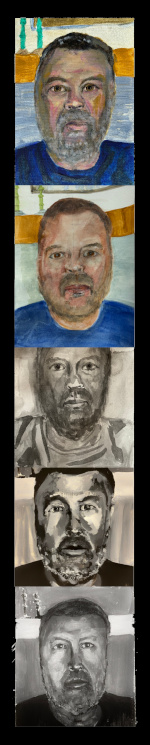

Letter #7
September 21, 2026
I’ve been without a studio while our house has been on the market. I had to agree with the stylist, too many practice areas for one room. As a consequence there wasn’t much writing and painting this summer. I did take a summer course in music notation and here’s a homemade fanfare to celebrate that. I'm also adding a one-drop beat experiment.
I just picked up my short story Trädgårdsmästaren (The Gardener) again but found myself a bit lost. Before summer vacation I had a map of ideas and connections in my head but it had all gone.
Instead it struck me how similar Trädgårdsmästaren is to The Seed of Light comic. Both can be summed up as: Writer meets academic and stumbles upon mystery. They are two very different stories but still share that DNA. The reason is probably that I had just finished a synopsis idea for Trädgårdsmästaren when I came across the call for submissions that led to The Seed of Light.
Provided I’m able to recollect my own ideas, Trädgårdsmästaren should be on the final stretch. Once ready I will share it here on the website. Knowing most of you don’t speak Swedish, I'm thinking of alternative ways to share what it’s about — let me know if you have any suggestions.
The art practice has been shelved in the absence of a place to work. I warmed up with some quick self portraits and the result made me laugh. Five strange faces that seem to belong to five different people:

The first painting was perhaps the best but I didn’t understand that until I had seen what was to come after it.
The second was a watercolor version. What happened here? I painted myself but I swear I have never seen this man before! A lot must have changed while the paint was drying.
For the third I used only two tones to simplify things. Now it wasn’t funny any more, so far each painting worse than the last.
With the fourth I went back to acrylics since they allow for corrections. Now I finally noticed how short the nose had been on the previous ones and was able to fix that.
The fifth is a continuation of the previous. I tried to increase the likeness but at the same time it ended up too flat in tone.
Reading is the one practice that can survive under any circumstances. No equipment needed except the book. I’ve read The Waves by Virginia Woolf, The Magus by John Fowles, Annihilation by Jeff VanderMeer, the trilogy by Samuel Beckett and a graphic novel called Malanotte by Marco Taddei.
The Waves was special in a good way. The story is told through each of the characters so that the complete picture is put together from six different angles. The following is perhaps sacrilegious since it’s such a classic, but it’s almost like a book built from those moments when they pull reality-TV participants aside to talk to the camera.
The other classic, the trilogy, was also special but in a stranger way. It contains three novels: Molloy, Malone Dies, and The Unnamable. Just as in The Waves there is no real plot. But Beckett also gradually removes more and more “normal” storytelling building blocks. Places, characters, names, the narrator, everything dissolves, even the language. I was totally unprepared and had to struggle through the book page by page. Not because it was bad, but because it was exhausting to read.
I can’t say I enjoyed it but at the same time I will never forget it.